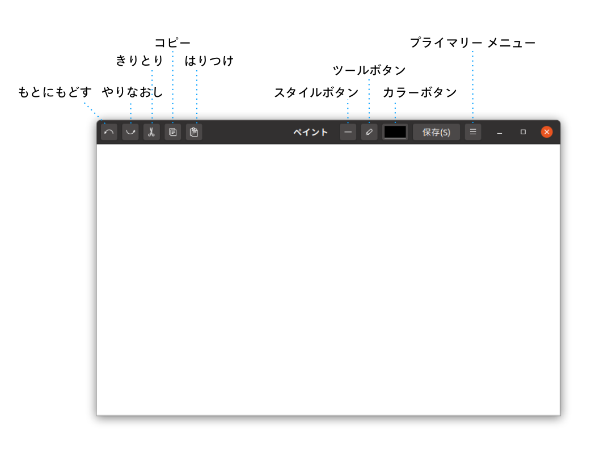
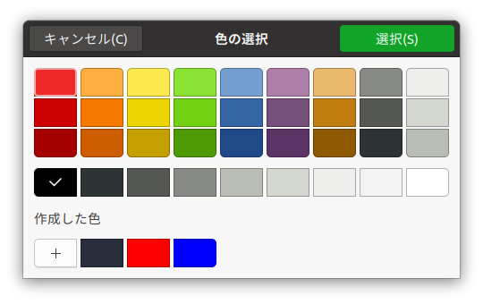
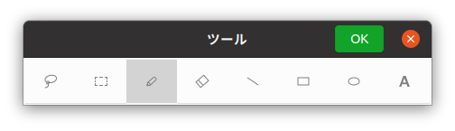
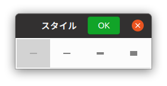

つかいかた
はじめかた
プログラムのファイル名は"esrille-paint"です。
グラフィックス アプリケーションの一覧から[ペイント]を選択します。そうすると、したのような「ペイント」ウィンドウがひらきます。

しろい用紙の部分にマウスカーソルをうごかすと、カーソルが鉛筆のかたちにかわります。そのままドラッグすると絵をかくことができます。[カラーボタン]をつかうと、色をかえられます。[ツールボタン]をつかうと、道具をかえられます。それぞれの道具については、このあとで説明していきます。
コマンドラインから「ペイント」をはじめたいときは、つぎのようにタイプします。
$ esrille-paint [ファイル名]...
ファイル名の部分には、ひらきたいファイルのなまえをタイプします。あたらしいファイルをつくるときは、ファイル名は指定しなくてもかまいません。
色
色をかえたいときは、[カラー]ボタンをおします。そうすると、したのような[色の選択]ダイアログボックスがひらきます。

つかいたい色をクリックしてから、[選択]ボタンをおして色をかえます。[色の選択]ダイアログボックスの[+]ボタンをおすと、じぶんで色をつくることができます。
ツール
道具をかえたいときは、[ツール]ボタンをおします。そうすると、したのような[ツール]ダイアログボックスがひらきます。

つかいたい道具をクリックすると道具がかわります。
よくつかうツールは、キーボードで選択することもできます。したの表の道具の列にかかれているキーをおすと、そのツールを選択できます。
| 道具 | 説明 |
|---|---|
 投げなわ 投げなわ |
画像のいちぶをじゆうな形で選択して、移動・拡大・縮小することができます。 まず、ドラッグして、じゆうに範囲を選択します。つぎに点線でかこまれた領域のなかにマウスカーソルを移動してドラッグします。 • [Shift]キーをおしながらドラッグすると、形をかえずに、うごかす方向を制限できます。 • [Escape]キーをおすと、いまの選択をおわらせられます。 |
 選択 選択[S] |
画像のいちぶを選択して移動したり、拡大・縮小したりすることができます。 まず、ドラッグして、四角い領域を選択します。つぎに点線でかこまれた領域のなかにマウスカーソルを移動してドラッグします。 • [Shift]キーをおしながらドラッグすると、形をかえずに、うごかす方向を制限できます。 • [Escape]キーをおすと、いまの選択をおわらせられます。 • [Ctrl]+[A]をおすと、画像全体を選択できます。 |
 ペンシル ペンシル[P] |
ドラッグした軌跡にそって、じゆうに線をひきます。 |
 消しゴム 消しゴム[E] |
ドラッグした軌跡にそって消します。 |
 直線 直線 |
ドラッグして直線をひきます。直線のかたちは、ドラッグをやめたときのかたちになります。 • [Shift]キーをおさえながらドラッグすると、うごかす方向を制限できます。 |
 四角形 四角形 |
ドラッグして四角形をかきます。四角形のおおきさは、ドラッグをやめたときのおおきさになります。 • [Shift]キーをおさえながらドラッグすると、正方形をかけます。 |
 楕円形 楕円形 |
ドラッグして楕円をかきます。楕円のおおきさは、ドラッグをやめたときのおおきさになります。 • [Shift]キーをおさえながらドラッグすると、円をかけます。 |
 テキスト テキスト[T] |
テキストをタイプします。 まず、テキストをタイプしたい位置をクリックします。つぎにキーボードで文字を入力します。 テキストを移動、拡大、縮小することもできます。入力したテキストの部分にマウスカーソルを移動してドラッグします。 • [Shift]キーをおしながらドラッグすると、テキストの形をかえずに、うごかす方向を制限できます。 • [Escape]キーをおすと、いまの入力をおわらせられます。 |
 ぬりつぶし ぬりつぶし |
線でかこまれている範囲をぬりつぶします。 ぬりつぶしたい範囲のうちがわを、どこでもよいのでクリックします。 |
スタイル
線のふとさをかえたいときは、[スタイル]ボタンをおします。そうすると、したのような[スタイル]ダイアログボックスがひらきます。

つかいたいスタイルをクリックすると線のふとさがかわります。
| スタイル | 説明 |
|---|---|
| 幅1ピクセル | |
 |
幅2ピクセル |
 |
幅4ピクセル |
 |
幅8ピクセル |
画像の編集
編集用のボタンをつかうと、きりとったり、はりつけたりといった編集をすることができます。
| ボタン | 内容 |
|---|---|
| もとにもどす [Ctrl]+[Z] |
まえの操作をとりけして、もとにもどします。 |
| やりなおし [Ctrl]+[Shift]+[Z] |
もとにもどした操作をやりなおします。 |
| きりとり [Ctrl]+[X] |
選択している範囲をきりとって、クリップボードにいれます。 |
| コピー [Ctrl]+[C] |
選択している範囲をコピーして、クリップボードにいれます。 |
| はりつけ [Ctrl]+[V] |
クリップボードのなかの画像やテキストを編集中の画像に、はりつけます。はりつけた内容は、ドラッグして、移動・拡大・縮小することができます。 • [Shift]キーをおしながらドラッグすると、形をかえずに、うごかす方向を制限できます。 |
保存
つくった画像は、ファイルに保存しておかないと、なくなってしまいます。画像を保存するには、「ペイント」ウィンドウの[保存]ボタンをクリックします。あたらしい画像を保存するときは、ダイアログボックスにファイル名を入力して[保存]ボタンをおします。
[Ctrl]+[S]をおして画像を保存することもできます。（Sは英語の"Save"の頭文字からきています。）
プライマリー メニュー
「ペイント」ウィンドウの[プライマリー メニュー]ボタンをおすと、メニューがひらきます。プライマリー メニューには、つぎのようなメニュー項目があります。
| メニュー項目 | 内容 |
|---|---|
| 新しい画像... [Ctrl]+[N] |
あたらしい画像の幅とたかさを入力して[OK]をおすと、あたらしい「ペイント」ウィンドウがひらきます。 |
| 開く... [Ctrl]+[O] |
ひらきたい画像ファイルを選択して[OK]をおすと、あたらしい「ペイント」ウィンドウがひらきます。 |
| 保存 [Ctrl]+[S] |
画像をファイルに保存します。 あたらしい画像を保存するときは、ダイアログボックスにファイル名を入力して、[保存]ボタンをおします。 |
| 名前をつけて保存... | 画像をべつのファイルに保存します。 ダイアログボックスにべつのファイル名を入力して、[保存]ボタンをおします。 |
| フォント... | テキストツールでつかうフォントとフォントのおおきさをえらびます。 |
| 透過モード | チェックしておくと、選択ツールが背景色の部分を選択しないようになります。 |
| アンチエイリアス | チェックしておくと、線をなめらかにかきます。線でかこった範囲をきれいにぬりつぶすには、線をかくときにチェックをはずしておきます。 |
| 背景色 | 背景の色をえらびます。 |
| ヘルプ | ウェブブラウザーに「ペイント」の手びきのページを表示します。 |
| ペイントについて | ダイアログボックスをひらいて、「ペイント」のバージョン情報などを表示します。 |
注意
現在、「ペイント」が対応している画像ファイルの形式は、「PNG」だけです。そのほかの形式は将来のバージョンでサポートする予定です。